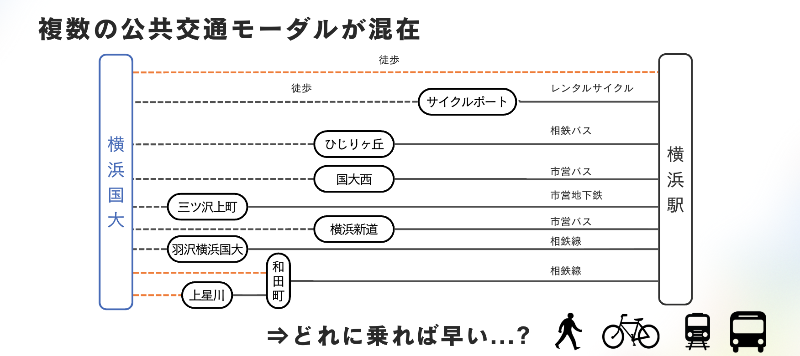
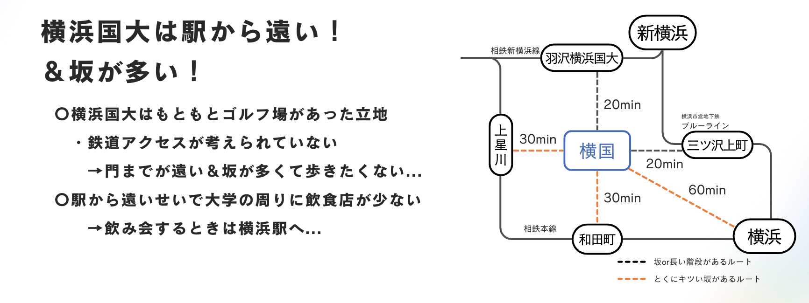
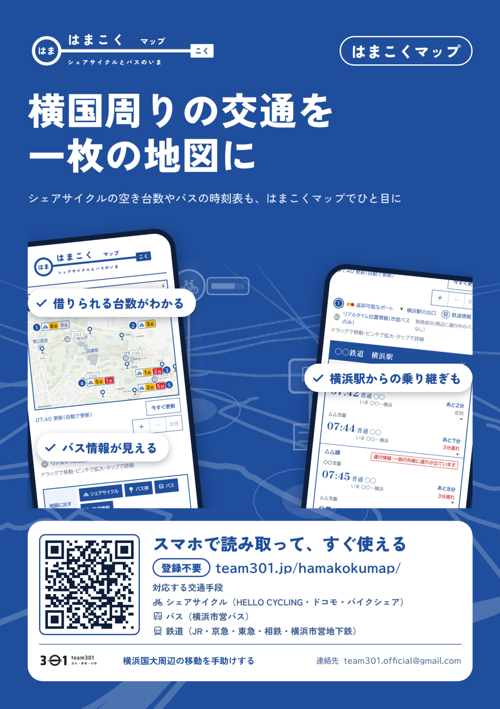

← 作品一覧に戻る
横浜国大から横浜駅へは、徒歩、レンタルサイクル、バス、地下鉄、相鉄線と、行き方がいくつもあります。「どれに乗れば早い?」を、その場で答えられるようにしたいと考えました。
もともとゴルフ場だった立地で、鉄道のアクセスが考えられていません。駅や門まで遠く、坂も多いので、歩く距離と時間を含めて選ぶ必要があります。
はまこく Exp. 出発地と時刻を選ぶと、バス・電車・シェアサイクル・徒歩を組み合わせた最速ルートを、到着が早い順に出します。乗り換えと運賃、遅れの情報までまとめて表示します。
はまこく マップ シェアサイクルの空き台数、バスの位置と時刻表、横浜駅から先の鉄道情報を、1枚の地図で見られます。
Work / Team Project
はまこく(team 301)
横浜国立大学から横浜駅へ、最速ルートを案内する乗換アプリ。
4人で開発
期間 1年半(継続中)
担当: バックエンド全般
公共交通オープンデータチャレンジ2026 出場
なぜ作ったか
横浜国立大学から横浜駅へ行くには、選べる手段が多く、しかも駅まで遠いという事情があります。


2つのアプリ
チームで作った紹介用のチラシです。

私の担当
バックエンド全般を担当しました。
最短経路を探すモジュール
経路のパターンごとに処理を分けて並列に実行し、到着が早い順に最大6件を返します。1つのパターンが失敗しても、ほかの結果は返ります。
アプリ全体のモジュール設計
外部データごとに adapter を分け、事業者ごとのデータの癖を閉じ込めました。運賃・停留所と駅の ID・事業者の設定は、1か所に集めています。
汎用的なデバッグシステム
経路探索のような複数のデータが絡む処理でも、原因を追いやすくするための仕組みです。
フロントエンドとの接続
画面とバックエンドをつなぎ、検索条件を受け取って結果を返す流れを作りました。
しくみ(構成図)
公開リポジトリの README に書かれた設計をもとに、作図しました。
経路のパターンは1つ1ファイルです。1つのパターンが失敗しても、ほかの結果は返ります。
使っているデータと技術
データ
- 横浜市営バス、相鉄バス、横浜市営地下鉄、相鉄線: 公共交通オープンデータ(ODPT)
- 神奈川中央交通: 公開されている時刻表
- シェアサイクル: HELLO CYCLING、ドコモ・バイクシェアの空き台数(GBFS)
- 地図: OpenStreetMap
技術
深夜の「25:30」のような24時超えの時刻は、単調に増える分として扱っています。